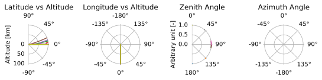
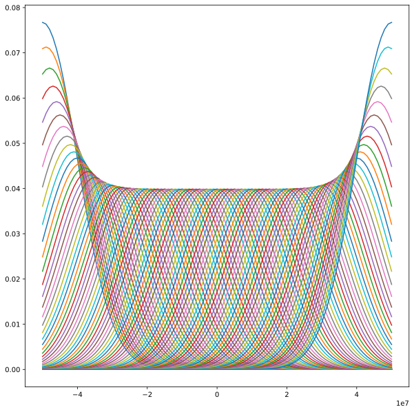

pyarts3.plots
Plotting ARTS data
This module provides functions related to plotting ARTS data based only on the type of the data. Each submodule is named exactly as the data type it can plot, which is also the name of a builtin group.
Each submodule provides a plot() function that takes the data type as its first argument and optional arguments to control the plotting. The plot() functions return the figure, a list of subplots, and nothing more.
ArrayOfPropagationPathPoint
Plotting routine the propagation path in polar coordinates
- pyarts3.plots.ArrayOfPropagationPathPoint.plot(ray_path: ArrayOfPropagationPathPoint, *, planetary_radius: float = 0.0, rscale: float = 1000, figure_kwargs: dict = {'dpi': 300}, draw_lat_lon: bool = True, draw_map: bool = True, draw_za_aa: bool = False, fig=None, subs=None)[source]
Plots a single observation in a polar coordinate system
Use the draw_* variables to select which plots are done
The polar plots’ central point is at the surface of the planet, i.e., at planetary_radius/rscale. The radius of these plots are the scaled down radiuses of the input ray_path[0].pos[0] / rscale + planetary_radius/rscale. The default radius value is thus just the altitude in kilometers. If you put, e.g., 6371e3 as the planetary_radius, the radius values will be the radius from the surface to the highest altitude
Note also that longitudes are unwrapped, e.g. a step longer than 180 degrees between ray_path points will wrap around, or rather, create separate entries of the lat-lons.
Example
import pyarts3 as pyarts import numpy as np ws = pyarts.Workspace() ws.atmospheric_fieldRead(toa=100e3, basename="planets/Earth/afgl/tropical/") ws.surface_fieldEarth() ws.ray_path_observer_agendaSetGeometric( add_crossings=True, remove_non_crossings=True ) ws.ray_path_observersFieldProfilePseudo2D(nup=3, nlimb=3, ndown=3) ws.ray_path_fieldFromObserverAgenda() f, a = None, None for x in ws.ray_path_field: f, a = pyarts.plots.ArrayOfPropagationPathPoint.plot( x, draw_za_aa=True, draw_map=False, fig=f, subs=a )
(
Source code,svg,pdf)
- Parameters:
ray_path (ArrayOfPropagationPathPoint) – A single propagation path object
planetary_radius (float, optional) – See
polar_ray_path_helperin source treerscale (float, optional) – See
polar_ray_path_helperin source treefigure_kwargs (dict, optional) – Arguments to put into plt.figure(). The default is {“dpi”: 300}.
draw_lat_lon (bool, optional) – Whether or not latitude and longitude vs radius angles are drawn. Def: True
draw_map (bool, optional) – Whether or not latitude and longitude map is drawn. Def: True
draw_za_aa (bool, optional) – Whether or not Zenith and Azimuth angles are drawn. Def: False
fig (Figure, optional) – A figure. The default is None, which generates a new figure.
subs (A list of five subaxis, optional) – A tuple of five subaxis. The default is None, which generates new subs. The order is [lat, lon, map, za, aa]
- Returns:
fig (As input) – As input.
subs (As input) – As input.
{kind=link}
ArrayOfSensorObsel
Plotting routine for the sensor response
- pyarts3.plots.ArrayOfSensorObsel.plot(measurement_sensor: ArrayOfSensorObsel, *, fig=None, keys: str | list = 'f', pol: str | Stokvec = 'I')[source]
Plot the sensor observational element array.
Note
Any option other than “f” will sort the sensor observational element array by the corresponding key. The object lives via a pointer, so the original measurement_sensor is modified in-place.
This should not massively affect any radiative transfer computations, but it might result in different results down on the floating point epsilon error level.
Example
import pyarts3 as pyarts import numpy as np ws = pyarts.Workspace() ws.measurement_sensorSimpleGaussian(std = 10e6, pos = [100e3, 0, 0], los = [180.0, 0.0], frequency_grid = np.linspace(-50e6, 50e6, 101)) pyarts.plots.ArrayOfSensorObsel.plot(ws.measurement_sensor)
(
Source code,svg,pdf)
- Parameters:
measurement_sensor (ArrayOfSensorObsel) – A sensor observation element array.
fig (Figure, optional) – The matplotlib figure to draw on. Defaults to None for new figure.
subs (Subaxis, optional) – List of subplots to add to. Defaults to None for a new subplot.
keys (str | list) – The keys to use for plotting. Options are in
SensorKeyType.pol (str | pyarts3.arts.Stokvec) – The polarization to use for plotting. Defaults to “I”, constructs a
Stokvec.
- Returns:
fig (As input) – As input.
subs (As input) – As input.
{kind=link}
AtmField
Plotting routine for profiles of the atmospheric field
- pyarts3.plots.AtmField.plot(atm_field: AtmField, *, fig=None, alts: ndarray | float = array([0., 2000., 4000., 6000., 8000., 10000., 12000., 14000., 16000., 18000., 20000., 22000., 24000., 26000., 28000., 30000., 32000., 34000., 36000., 38000., 40000., 42000., 44000., 46000., 48000., 50000., 52000., 54000., 56000., 58000., 60000., 62000., 64000., 66000., 68000., 70000., 72000., 74000., 76000., 78000., 80000., 82000., 84000., 86000., 88000., 90000., 92000., 94000., 96000., 98000., 100000.]), lats: ndarray | float = 0, lons: ndarray | float = 0, ygrid: ndarray | None = None, keys: list[str] | None = None)[source]
Plot select atmospheric field parameters by extracting a profile.
Example
import pyarts3 as pyarts import numpy as np ws = pyarts.Workspace() ws.atmospheric_fieldRead(toa=100e3, basename="planets/Earth/afgl/tropical/") pyarts.plots.AtmField.plot(ws.atmospheric_field, keys=["p", "t"])
(
Source code,svg,pdf)- Parameters:
atm_field (AtmField) – An atmospheric field
fig (Figure, optional) – The matplotlib figure to draw on. Defaults to None for new figure.
alts (
ndarray|float, optional) – A grid to plot on - must after broadcast with lats and lons be 1D. Defaults to np.linspace(0, 1e5, 51).lats (
ndarray|float, optional) – A grid to plot on - must after broadcast with alts and lons be 1D. Defaults to 0.lons (
ndarray|float, optional) – A grid to plot on - must after broadcast with alts and lats be 1D. Defaults to 0.ygrid (
ndarray|None, optional) – Choice of y-grid for plotting. Uses broadcasted alts if None. Defaults to None.keys (list, optional) – A list of keys to plot. Defaults to None for all keys in
keys().
- Returns:
fig (As input) – As input.
subs (As input) – As input.
{kind=link}
SubsurfaceField
Plotting routine for profiles of the subsurface field
- pyarts3.plots.SubsurfaceField.plot(subsurf_field: SubsurfaceField, *, fig=None, alts: ndarray | float = array([-1., -0.5, 0.]), lats: ndarray | float = 0, lons: ndarray | float = 0, ygrid: ndarray | None = None, keys: list[str] | None = None)[source]
Plot select subsurface field parameters by extracting a profile.
- Parameters:
subsurf_field (SubsurfaceField) – A subsurface field
fig (Figure, optional) – The matplotlib figure to draw on. Defaults to None for new figure.
alts (
ndarray|float, optional) – A grid to plot on - must after broadcast with lats and lons be 1D. Defaults to np.linspace(0, 1e5, 51).lats (
ndarray|float, optional) – A grid to plot on - must after broadcast with alts and lons be 1D. Defaults to 0.lons (
ndarray|float, optional) – A grid to plot on - must after broadcast with alts and lats be 1D. Defaults to 0.ygrid (
ndarray|None, optional) – Choice of y-grid for plotting. Uses broadcasted alts if None. Defaults to None.keys (list, optional) – A list of keys to plot. Defaults to None for all keys in
keys().
- Returns:
fig (As input) – As input.
subs (As input) – As input.